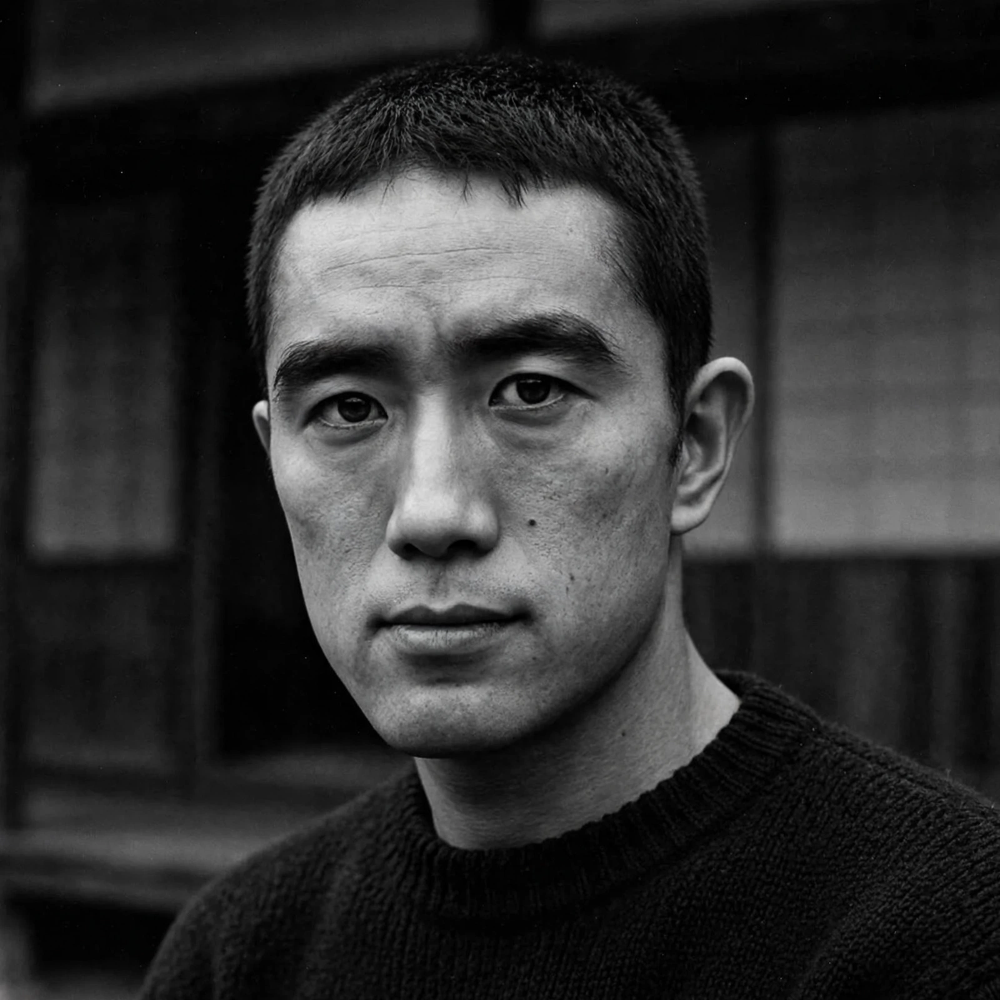

Yukio Mishima (Japanese: 三島 由紀夫; 14 January 1925 – 25 November 1970), born Kimitake Hiraoka, was a Japanese author, poet, playwright, actor, model, Shintoist, nationalist, and founder of the Tatenokai militia. Regarded by many as the most important Japanese author of the twentieth century, he wrote 34 novels, some 50 plays, 25 books of short stories, and at least 35 books of essays, and was nominated for the Nobel Prize in Literature several times. On 25 November 1970, after a failed attempt to incite the Self-Defense Forces to a coup d'état, he died by seppuku — an ending he had scripted into his work for decades.
| Yukio Mishima | |
|---|---|
 Mishima in 1955 | |
| Born | Kimitake Hiraoka, 14 January 1925, Yotsuya, Tokyo, Japan |
| Died | 25 November 1970 (aged 45), Ichigaya, Tokyo, Japan |
| Cause of death | Seppuku following a failed coup attempt |
| Occupation | Novelist, playwright, essayist, actor |
| Notable works | Confessions of a Mask; The Temple of the Golden Pavilion; The Sea of Fertility tetralogy |
| Movement | Postwar Japanese literature; aestheticism; nationalism |
Hiraoka was raised largely apart from his parents by his formidable grandmother Natsuko, a woman of samurai descent steeped in kabuki and classical literature, who kept the sickly boy indoors among books. At the Peers' School he published precocious stories under the pen name Yukio Mishima, chosen partly to hide his writing from his bureaucrat father. Graduating from the University of Tokyo's law faculty, he worked briefly at the Ministry of Finance before resigning in 1948 to write full-time.
Confessions of a Mask (1949), a semi-autobiographical novel of a young man concealing his homosexuality and fascination with beauty and violent death, made him famous at 24. There followed a dazzling sequence: The Sound of Waves, the internationally best-selling The Temple of the Golden Pavilion (1956) — in which a stuttering acolyte burns the temple he adores — and After the Banquet. From the mid-1950s Mishima remade his frail body through bodybuilding and kendo, pursued acting and modeling, and grew increasingly political, exalting the Emperor, the samurai ethic of Hagakure, and the union of "pen and sword" (bunbu ryōdō).
In 1968 Mishima founded the Tatenokai ("Shield Society"), a private militia of young men devoted to the Emperor, which trained with the Self-Defense Forces. He completed his masterwork, The Sea of Fertility tetralogy (1965–1971) — four novels tracing a single reincarnated soul across modern Japan — on the very day of his death. On 25 November 1970, Mishima and four followers seized the office of the commandant of the JSDF Eastern Army headquarters at Ichigaya; from the balcony he harangued the assembled soldiers, urging them to rise and restore the Emperor's power. Jeered by the troops, he withdrew and committed seppuku, his follower Morita serving as second and then dying likewise. The incident shocked Japan and the world; debate over its meaning — political protest, aesthetic act, or personal destiny — has never ceased.
Mishima's oeuvre, translated worldwide, includes the modern Noh plays, the novel Forbidden Colors, and essays such as Sun and Steel. Yasunari Kawabata was his mentor; his suicide in turn devastated Kawabata. The Mishima Prize for literature was established in 1988. His life and death remain among the most contested in modern letters: to admirers, an artist who made his life his final work; to critics, a brilliant writer consumed by reactionary fantasy.
From Wikipedia, the free encyclopedia (recreated from memory).